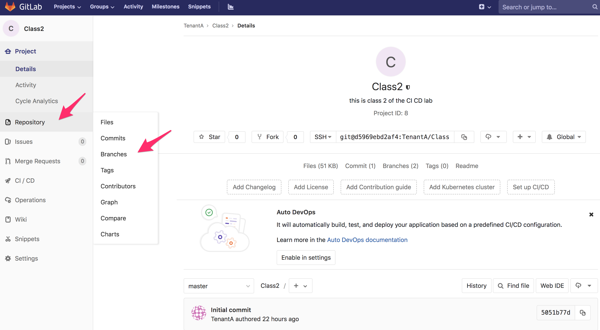
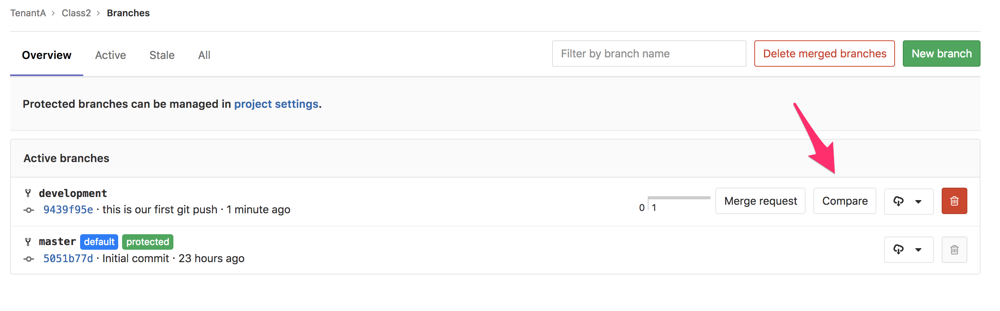
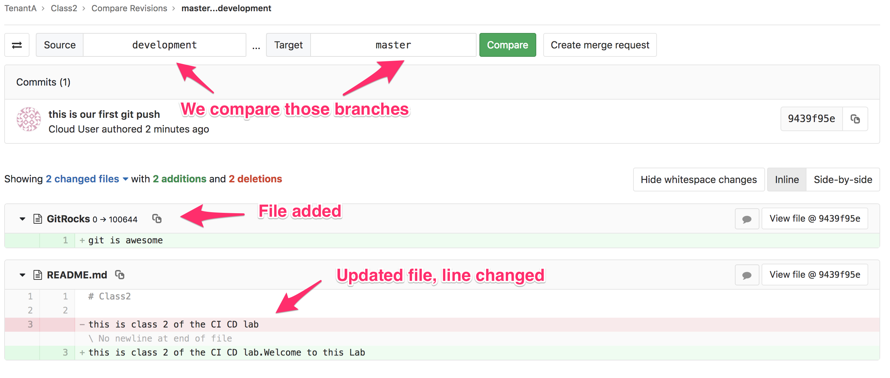
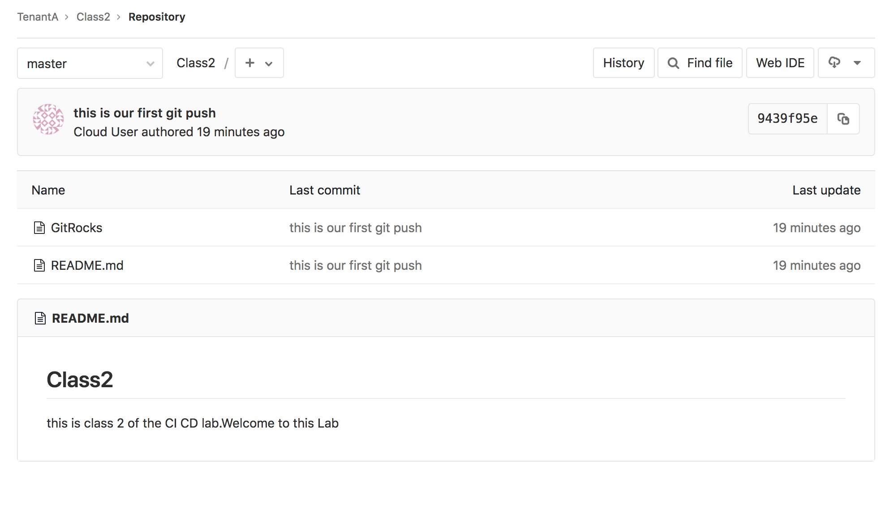

Merge branches¶
If you have used a branch to work on a new version of your project; once your update is done, you’ll want to merge this branch with another branch like master to highlight that this is the latest/recommended “version” to use.
In this lab, we will merge our changes from the development branch to the master branch.
Merge branch via the GUI¶
Connect to GitLab. It should be http://<IP of your VM>:1080/
- Login: TenantA
- Password: Pa55w0rd
Note
If you use UDF (F5 private cloud), you may use the RDP Jumphost to access GitLab or the direct HTTP access from UDF interface

Click on the project class2

You will see this:

We can see that the master branch doesn’t reflect the changes we did in the development branch.
Let’s merge our two branches. Click on Repository > Branches.
{kind=link}
On the next screen, click on Compare.
{kind=link}
Here we can see that we are comparing our two branch. What you see in green has been added (text or files). What is in Red has been removed/changed.
{kind=link}
This window gives us the opportunity to review the difference in our branches before asking for a merge. We are fine with those updates so we can move forward.
- Click on Create merge request. The next screen shows us that we want to do a merge request
- from development into master.
We can see the following:
- the Title of the merge request has retrieved the commit log we created with the
git commitcommand - you can add a custom Description to your merge request. This is important if someone else will approve your merge request. The more detailed/explicit it is, the easier it will be for the reviewer to check your request
{kind=link}
Scroll down and click on Submit merge request.
On this page, we can see our “official” merge request. Because we are the owner of this repo, we also have the capability to approve/reject this merge request. Here we can:
- Approve the merge request by clicking on the Merge green button
- Reject/Cancel the request by clicking on the Close merge request orange button
- Use the discussion area to communicate with the owner of the merge request. Since it’s us, there is no need here.
{kind=link}
Click on the Merge button. We can see on the next screen that our branches have been merged.
Note
We can also delete the development branch if it’s not needed anymore by clicking on the Remove Source Branch.
{kind=link}
Click on the master link on this screen to be redirected to the master branch of this repository.
{kind=link}
This is how you can do a merge request when you need to merge two different branches.
if you want to know more about merging, you may review the git doc: BranchingMerging.